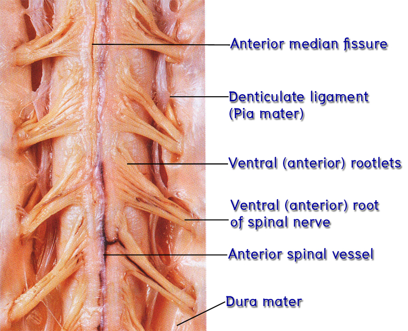
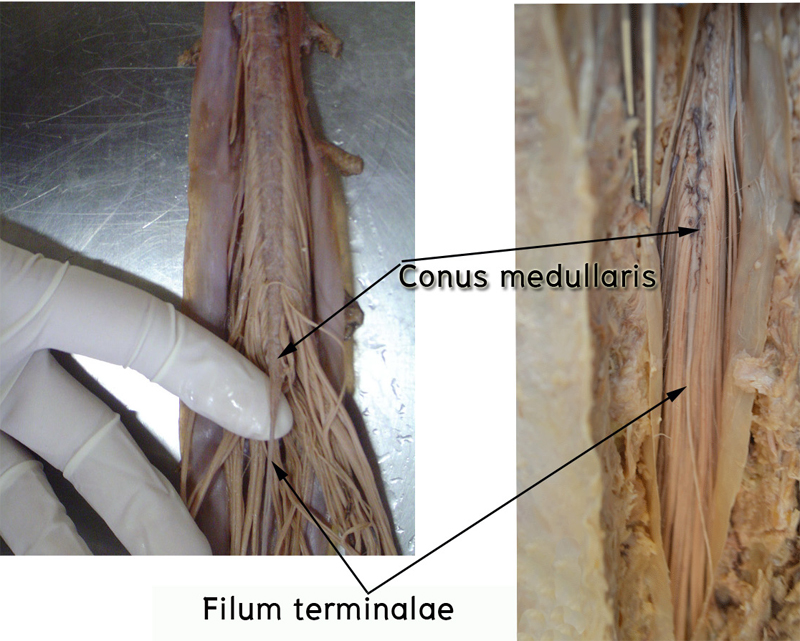
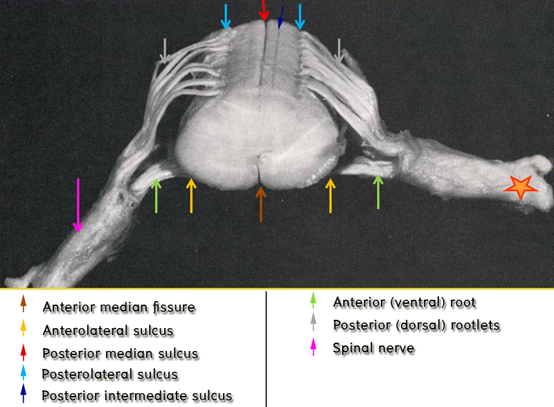

Spinal cord anatomy
นำ gross specimen of spinal cord มาชี้แสดง: Dura mater, Arachnoid mater, Pia mater, Denticulate ligament, Filum terminale, Cervical enlargement, Lumbosacral enlargement, Conus medullaris, Cauda equina, Dorsal root ganglion, Dorsal rootlets และ Ventral rootlets


ศึกษา Spinal Cord Topography
- นำ gross specimen of spinal cord มาชี้แสดงและเติมคำในช่องว่างให้ถูกต้อง:
